Ronny Fredrikssons webbsidor om Florarna
När vår medlem och vän Ronny Fredriksson gick bort efter en tids sjukdom väcktes ett stort engagemang för att rädda kvar de webbsidor som Ronny tagit fram om naturen på Florarna. Naturskyddsföreningen i Uppsala län fick hjälp av medlemmar och andra engagerade att snabbt samla in pengar för att betala webbhotellet.
Nu har en långsiktigt förvaltning av sidorna ordnats av Naturskyddsföreningen.
Vi vill hedra Ronny Fredrikssons minne genom att bevara och sprida information om ett av Nordupplands finaste naturområden Florarna.
Ronny Fredrikssons naturintresse växte när han som ung grabb upptäckte Florarna. Under en period var Ronny en mycket omtyckt ledamot i Naturskyddsföreningen Uppsala läns styrelse.
Det var under den tiden han också var tillsyningsman i Flororna där han hade ett verkligt betydelsefullt uppdrag.
Ronny gick sedan vidare med sin karriär i säkerhetsbranschen och det fackliga arbetet.
Men han fortsatte att njuta av naturen på Florarna. Han lärde oss att vårt arbete med att slå vakt om naturen är nödvändigt.
En kort tid efter att Ronny gått bort, så kom nyheter att vargtiken Flora som länge gått ensam på Florarna träffat en hane. Tänk om Ronny fått veta det.
Tack Ronny för alla dina insatser! Nu hoppas vi att fler både människor, andra djur, svampar och växter kommer trivas i Nordupplands vildmarksområde.
Maria Gardfjell,
För Naturskyddsföreningen Uppsala län
--------------------------------------------------------------------------------
Hjärtligt välkomna till Ronny Fredrikssons sidor om Florarna med omgivningar!
---------------------------------------------------------------------------------
Läs om den dödsdömda skogen som blev räddad - Tvestensskogen - I naturreservatets yttre zon.

Naturreservatets yttre zon innebär i praktiken inget skydd, men snart utvidgas den inre zonen. Foto: Ronny Fredriksson
--------------------------------------------------------------------------------------------------------------------------
Syftet med dessa sidor är att bidraga till naturskyddet, dokumentera, ge information, inspirera och kanske underlätta besök i Florarna. En mer personlig orsak är att ha något annat än det ordinarie jobbet att syssla med, dvs ge mig vila och rekreation :-)
Men för mig personligen handlar det om mycket mer….
Om Florarna på Facebook

Bild från tjäderspel i östra Florarna 2012. Foto: Ronny Fredriksson
Jag tror att vi människor kan få speciella relationer till ett stycke natur…..jag har genom åren fått en andlig relation till Florarna med omgivningar. Denna relation är mycket gammal. Min släkt har levt och dött i Florarnas närhet åtminstone sedan början av 1700-talet. Vi har bott vid Åkerbysjöns södra strand….ännu bär ett torp där namnet Hagelstorp……vi har bott i Risön…..vi har bott i Kalvsbo……vi har bott i Norrtorpen……vi har bott vid Hagels Boda, Ursbo….vi har bott vid Dammstugan, Ursbo, vi har bott vid Bennbo i Film, vi har bott i Bryttbyn…..mina rötter finns kring och i Florarna….jag stannar ofta upp på dessa platser och tänker på tidigare släktgenerationer.
Men det handlar också om minnena från den första vandringen till Agnsjön med min pappa Åke och farfar Fritz på 1970-talet. Det handlar om mina första egna vandringar….då familjen släppte av mig i Tegelsmora och plockade upp mig i Sibbo….åren har gått….jag har levt med Florarna…under mitt liv…olika årstider….med olika vänner…..med familj, mostrar och kusiner.
Jag har plurrat, jag har frusit, jag har svurit över de ibland extremt oländiga förhållandena i området.
Men jag har också haft oförglömliga upplevelser vid lägerelden i den mörka skogen, ugglorna som ropat, orrarnas och tjädrarnas spel. Upplevelser tillsammans med goda vänner och familj. Men oftast ensam.
I boken ”Nordiska Nätter - Djurliv mellan skymning och gryning” skriver naturfotografen och författaren Felix Heintzenberg några tänkvärda rader: ”När även människans maskiner och deras ljud avstannar kan tystnaden ta plats. I en mekaniserad tid kan stillheten inte längre tas för given, att känna tystnaden sakta uppfylla en med ro har för vissa kommit att bli en sällsynt upplevelse, nästan lyx.”
I min och andras kamp för naturskyddet har jag ibland varit arg på de jägare, skogsbruk, markägare som inte tar hänsyn. Jag har hört de som talat illa om mig bakom min rygg för att de inte håller med om mina naturskyddssträvanden. Jag har varit aktivt motarbetad……men jag har också vänner som är jägare, aktiva i skogsbruket och är skogsägare.
Men att alla inte älskar mig kan jag ta….för jag älskar Florarna!

Lördagen den 9 mars sågs två gamla havsörnar vid Skälsjön. Foto: Ronny Fredriksson
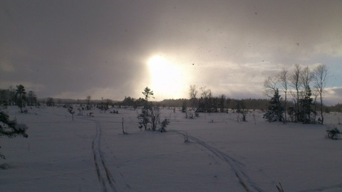
Storfloran januari 2013. Foto: Britt-Marie Fredriksson
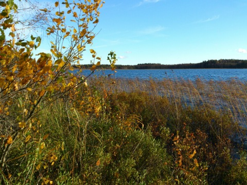
Höst vid Vikasjön. Foto: Ronny Fredriksson
Med Florarna menar jag inte bara naturreservatet utan även de områden som hamnade utanför det naturskyddade området som beslutades 1976.
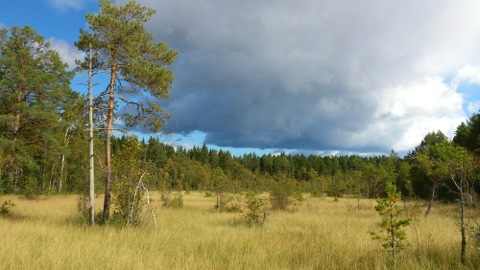
Hålmyrarna i södra Florarna ligger utanför naturreservatet. Foto: Ronny Fredriksson
UPPMANING! Gör en insats i naturreservatet Florarnas yttre zon och hjälp till att bevaka att föreskrifterna efterlevs av skogsägarna! Föreskrifterna för yttre zonen finns markerad i rött på sidan Fakta om Florarna samt att reservatsföreskrifterna i dess helhet finns på sidan Dokument om Florarna.
Länsstyrelsen sköter förvaltning, tillsyn och skötsel och kan nås på direkt telefon 010 - 22 33 228 eller växeln på 010 - 22 33 000.
Jag vill inledningsvis säga att Florarna är behagligast för en besökare under perioden från den 1 september till den sista maj. Detta beroende på att övrig tid är det ganska mycket av mygg, knott och bromsar. Men är du tålig är även ett sommarbesök något som kan vara mycket intressant.
Florarna är en bit vildmark belägen mellan de gamla bruken i norra Uppland. I norr ligger Lövstabruk, i söder Österbybruk och Dannemora gruvor, i väster Tobo bruk och Hillebola bruk.
Det finns även en öppen grupp på Facebook för oss som gillar Florarna.
Ronny Fredriksson
-----------------------------------------------------------
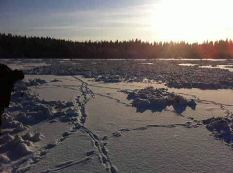
Januari månad kan vara bra för att göra en spårutflykt. Foto: Ronny Fredriksson
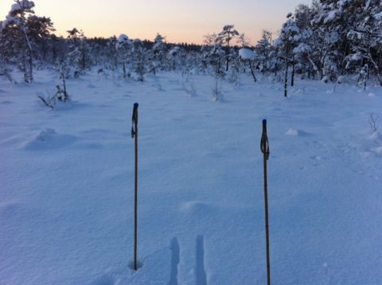
Februari kan vara en fin tid för skidturer i Florarna. Stormossarna i östra delen av Florarna. Foto: Ronny Fredriksson
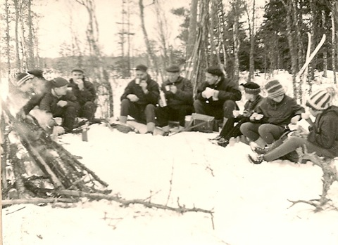
Skidutflykt i Florarna på 50 eller 60-talet? Enligt uppgift är bilden tagen vid en rast efter vintervägen mellan Stora Agnsjön och Fillsartrusket. Tidigare tillsynsmannen i Florarna, Holger Hagel, syns trea eller fyra från vänster.
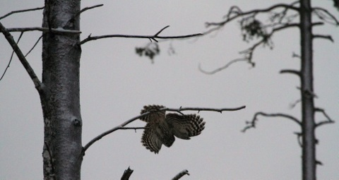
Mars är den tid på året då man skall ge sig ut i den vindstilla och stjärnklara natten och lyssna efter ugglor. Här ses en slaguggla som dyker från en gren. Foto: Ronny Fredriksson
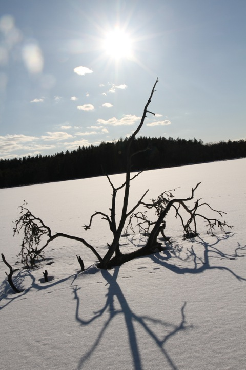
Mars kan vara en fin tid för skidutflykter om snö och is fortfarande är kvar. Denna bild är tagen vid Lilla Agnsjön den 16 mars 2013. Foto: Ronny Fredriksson
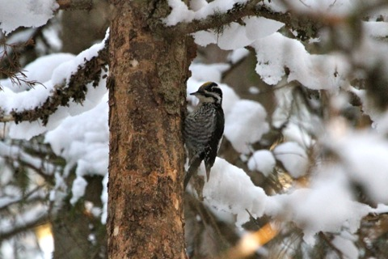
Mars är också hackspettarnas tid i Florarna. Här en tretåig hackspett. Foto: Ronny Fredriksson
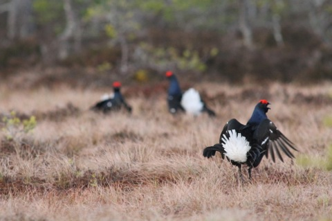
April är tiden för orrarnas spel i Florarna. Foto: Ronny Fredriksson
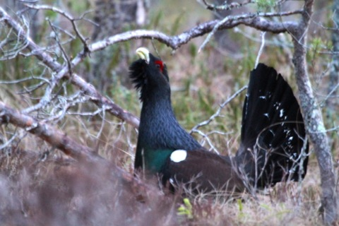
Maj är månaden för tjäderspel i Florarna. Höjdpunkten, den sk ”hönveckan brukar infalla första veckan i maj. Foto: Ronny Fredriksson
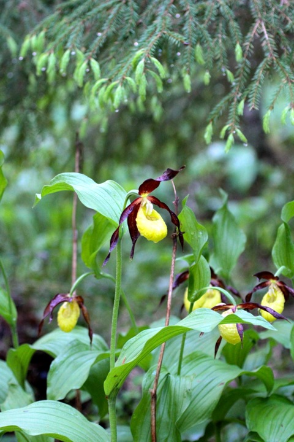
Juni. Guckuskon brukar blomma i Florarna kring den 10:e. Foto: Ronny Fredriksson
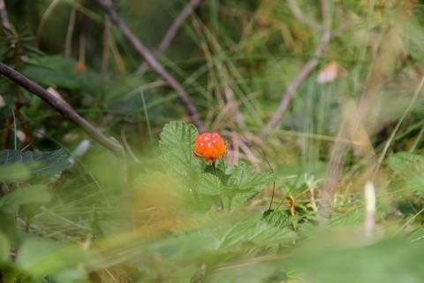
Juli är hjortronens tid i Florarna. Foto: Ronny Fredriksson
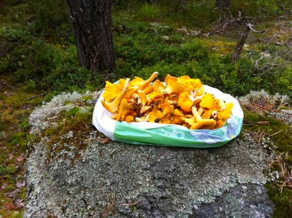
Augusti är svamptider i Florarna. Foto Ronny Fredriksson
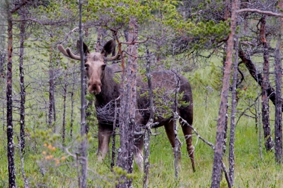
Oktober. Andra veckan börjar älgjakten i Florarna. Foto: Ronny Fredriksson